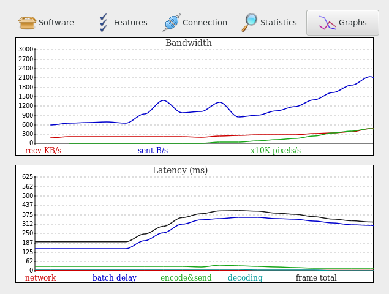

See also: protocol, authentication, encryption and multicast DNS
| Type | Bind option | Availability | Information |
|----------------------|--------------|------------------------------------------------------------------------------|-----------------------------------------------------------------------------------------------------|
| TCP | bind-tcp | All | | QUIC | bind-quic | All | | SSL | bind-ssl | All | | SSH | bind-ssh | All | |
WebSocket | bind-ws | All | |
Secure WebSocket | bind-wss | All | |
RFB | bind-rfb | desktop and shadow servers only | Allows VNC clients
to connect | | unix domain socket | bind |
Posix | Local connections or via SSH | |
named-pipe | bind | MS Windows | #1150 | |
vsock | bind-vsock | Linux | host - guest
virtual machines connections - see #983 |
TCP sockets can also be upgraded transparently to
(Secure) WebSocket, SSL,
SSH and RFB, so a single TCP port
can support 6 different protocols automatically.
Unencrypted modes like plain-TCP and
plain-WebSocket can also be secured with AES.
All the sockets that can be accessed via a network connection (all but
vsock and named-pipe) will usually be
published via multicast DNS. On Posix,
unix-domain-sockets are exposed as SSH as we
assume that a local SSH server is always available.
By default, local unix domain sockets (--bind=auto which
is the default) also create abstract sockets,
use --bind=noabstract if needed.
See also: Security Considerations
xpra start --start=xterm --bind-tcp=0.0.0.0:10000xpra attach ws://localhost:10000/The same address (10000 here) can also be opened in a browser to use the HTML5 client:
xdg-open http://localhost:10000/echo -n thepassword > password.txt
xpra start --start=xterm --bind-ssh=0.0.0.0:10000,auth=file,filename=password.txtxpra attach ssh://localhost:10000/The client will prompt for the password, as found in the
password.txt file and not the regular shell account
password.
Xpra will try to detect your network adapter and connection
characteristics, and it should adapt to changing network capacity and
performance. However, it may not always get it right, and you may need
to turn off bandwidth detection (bandwidth-detection
option) and / or specify your own bandwidth constraints.
(bandwidth-limit option).
You can see how much bandwidth is used and how good the picture latency is using the "Graphs" tab of the "Session Info" dialog found in Xpra's system tray menu:

More network information is available elsewhere in the "Session Info" dialog or via the "xpra info" command:
$ xpra info | egrep -i "network|latency"
(..)
client.latency.50p=3
client.latency.80p=3
client.latency.90p=3
client.latency.absmin=1
(..)The performance of xpra will be affected by your network connection speed, in particular bufferbloat is known to cause severe performance degradations as xpra is quite sensitive to network jitter and latency, try to eliminate bufferbloat in your network.
QUIC should offer the lowest latency, though it may need some tuning.
See A little bump in the wire that makes your Internet faster, bufferbloat faq.
For Linux systems, Queueing in the Linux Network Stack is recommended reading.